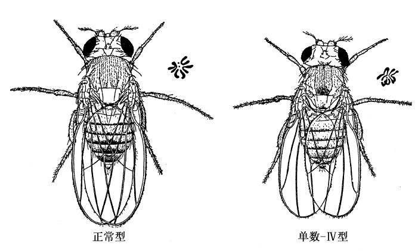
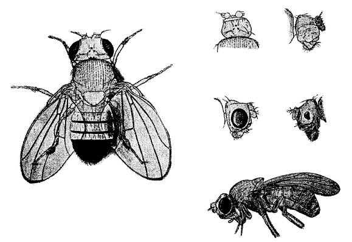
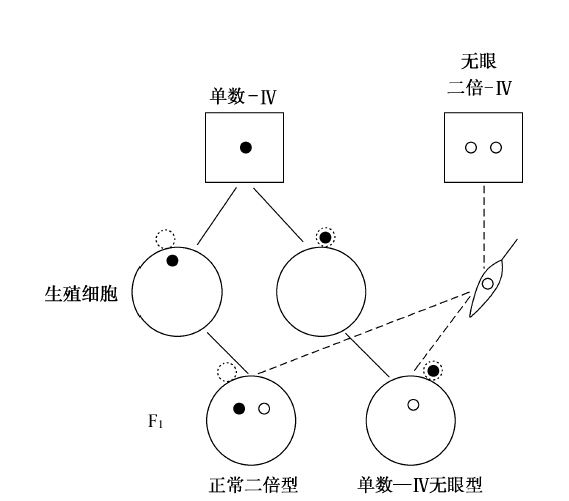
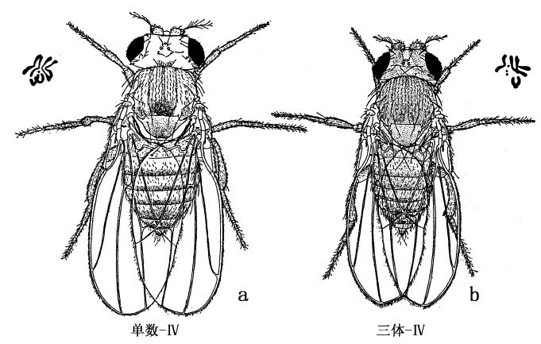
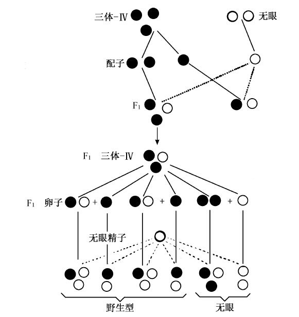
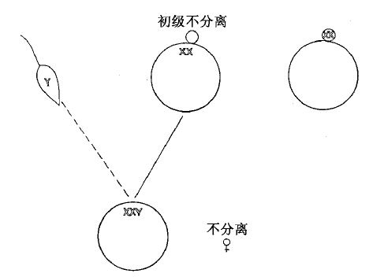
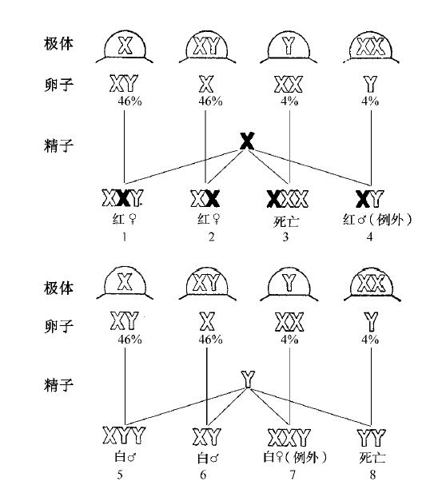
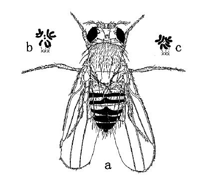
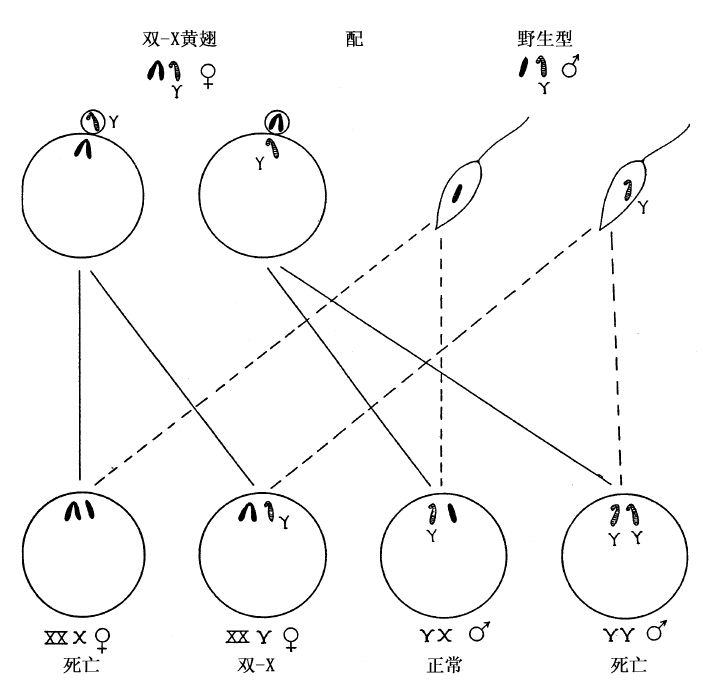
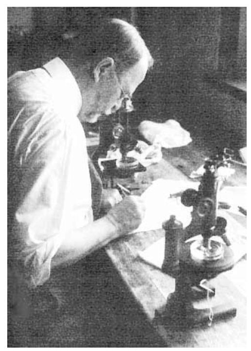

第4章 染色体与基因
近来遗传研究涉及染色体数目改变时的特定效应，而这些染色体都带有遗体因子，使我们可以辨认它们的存在，所以这些遗传学研究的结果，可能为染色体在遗传中的重要性，提供最完全、最有说服力的证据。
霍普金斯大学米尔顿·艾森豪威尔图书馆外景图。摩尔根1886年进入该大学生物系读研究生，在此，他逐渐形成了极为推崇科学实验的基本观点，对这种观点，摩尔根一生都信守不渝。
不仅有染色体所经过的一系列行动为遗传理论提供了机制，而且也积累了其他方面的证据，来支持染色体上带有遗传要素或基因这个观点。这种证据每年都在加强。证据是从几个方面得来的。最早一个证据是从雌雄两方遗传平等的发现中得出的。雄性动物通常只贡献精子的头部，头内几乎完全是由染色质密集而成的胞核。卵子虽然供给了未来胚胎的所有可见的原生质，但是，除了发育的最初阶段决定于母方染色体影响下的卵子原生质以外，卵子对于发育并没有什么优势影响。尽管有这点初期的影响，可是以后的发育阶段和成体方面却没有表现出母方影响的优势，而且连这点初期的影响也完全是受了以前母方染色体的影响的。
父母双方影响的证据本身还是没有说服力的，因为这里涉及了显微镜下所不能看到的要素，因此，人们也许认为精子供给未来胚胎的，除染色体以外，还有别的物质。事实上，近年来已经证明了精子可以把可见的原生质要素——中心体，带给卵子。不过中心体对于发育过程是否有任何特殊影响，却没有得到证实。
另一方面的事实也表现了染色体的重要性。两条（或两条以上）精子同时进入卵子，由此得到的三组染色体，在卵子第一次分裂时零乱地分布着。这样便形成了四个细胞，而不是像正常发育中形成两个细胞那样。详细研究这一类的卵子，同时也研究四细胞被分开以后各个细胞的发育情况，证明没有整组的染色体，也就没有正常发育。至少这是研究结果的最合理的解释。但是在这些例子里，染色体上面没有标记，所以这个证据最多也不过创立一种假说，就是至少必须有一整组的染色体。
最近，从其他方面获得了支持这一解释的证据。例如，已经证明，单单一组染色体（单倍）便能够产生一个和正常型大致相同的个体，不过这项证据也指出了单倍型个体不像同一物种的正常双倍型那么健壮。这种差别可能决定于染色体以外的其他因素，但就目前情形而论，双组染色体优于单组染色体的假说，仍然是成立的。另一方面，在藓类生活史的单倍体时期，如果用人工方法把单倍体转化为二倍体也看不出什么好处。再次，人造四倍体中的四组染色体是否比普通二倍染色更为有利，尚有待于证明。因此，我们在较量一组、二组、三组或四组染色体的优劣时，必须谨慎从事，特别是当发育机制业经适应了的正常染色体组内有几条的增减，从而突然造成一种不自然的状态的时候。
近来遗传研究涉及染色体数目改变时的特定效应，而这些染色体都带有遗体因子，使我们可以辨认它们的存在，所以这些遗传学研究的结果，可能为染色体在遗传中的重要性，提供最完全、最有说服力的证据。
果蝇里一条微小的第四染色体（染色体-Ⅳ型）的增减，便是这样的一个证据（图29）。利用遗传学方法和细胞学方法，都证明了在一个生殖细胞内（精子或卵子），有时损失了一条第四染色体。缺少这一条染色体的卵子，同正常的精子受精，受精卵只含一条第四染色体。卵子发育成蝇［单数-Ⅳ（或单数第四染色体）］后，在身体的许多部分上，和正常蝇稍有不同。

图29 黑腹果蝇的正常型和单数-Ⅳ型。各型果蝇的右上端附有各该型的染色体群
结果证明：第四染色体缺少一条时，尽管有了另一条第四染色体，也会发生一些特定的效应。
第四染色体上有无眼、弯翅和剃毛三个突变基因（图30），三者同为隐性。单数-Ⅳ雌蝇如果同双倍型无眼雄蝇交配，雄蝇有两条第四染色体（其成熟精子各含一条）。孵化出来的一些后代无眼。检查茧内不能孵化的蛹，可以查出更多的无眼果蝇。无眼果蝇系由缺少第四染色体的卵子同第四染色体上带有无眼基因的精子受精，产生出来的。如图31所示，一半的果蝇应该无眼，但其中大多数不能超过蛹的阶段，就是说，无眼基因有着使个体衰弱的效应，又加上第四染色体缺少一条的影响，所以只有少数存活着。不过这种隐性无眼果蝇在第一代中出现，却证实了第四染色体上带有无眼基因这一解释。

图30 黑腹果蝇第四连锁群的性状。左侧示弯翅；右上角示无眼的四个蝇头：一个为背面观，三个为侧面观；右下角示剃毛

图31 示正常眼单数-Ⅳ果蝇，同有两条第四染色体（各有一个无眼基因）的无眼果蝇杂交。小白圈代表无眼基因的第四染色体，小黑圈代表正常眼基因的第四染色体
用弯翅剃毛两个突变基因做同样的实验，也得出相同的结果。但杂交一代中孵出的隐性型果蝇，百分数更小，表示这两个基因比无眼基因有着更大的衰弱效应。
有时也发生了具有三条第四染色体的果蝇，是谓“三体第四染色体”果蝇（图32）。它们在几种或多种性状上，也许在所有性状上，都与野生型不同：眼比较小，体色比较黑，翅幅比较狭小。如果用三体-Ⅳ型同无眼果蝇交配，结果产生两种后代（图33）。一半为三体-Ⅳ果蝇，一半有常额的染色体，如图中所示。

图32 示黑腹果蝇的单数-Ⅳ型和三体-Ⅳ型。果蝇的左上角和右上角示各种类型的染色体群
取三体第四染色体型果蝇，回交无眼果蝇（原种），预计应得野生型和无眼型的比例为5∶1（图33下半部），而不是普通杂合个体回交其隐性型情况下的1∶1。图33示生殖细胞的重新结合，预期野生型和无眼型的比例为5∶1。实际得到的无眼果蝇，接近预测的数字。

图33 示正常眼的三体-Ⅳ型果蝇，同纯粹无眼的正常二倍体果蝇杂交。图中下半部示子代的三体-Ⅳ型果蝇（子代卵子代表它的配子）同二倍体无眼果蝇（圆圈代表“无眼精子”）杂交，产生五种果蝇，其中野生型与无眼型的比例为5∶1
这些实验和其他同样的实验，证明遗传学研究结果和我们所知道的第四染色体的历史，处处符合。凡是熟悉这项证据的人们，对于第四染色体上有某种东西同所观察的结果有关这一点，决不能有丝毫的怀疑。
另有证据，表示性染色体也是某些基因的携带者。果蝇里在遗传上被认为是性连锁的性状，共计有200种之多。性连锁的意义只是指各项性状由性染色体携带，而不是说这些性状只限于雄体或者只限于雌体。因为雄蝇的两条性染色体（X和Y）彼此不同，所以凡是基因在X染色体上的性状，在遗传上是同其他性状颇不相同的。已经证明了，果蝇的Y染色体上还没有一个基因，能够抑制X染色体上隐性基因的表现的。所以我们认为Y染色体在精子细胞减数分裂时作为X染色体的配偶以外，是无他用的。果蝇中连锁性状的遗传方法，已经在第1章谈过了（图11、12、13、14）。图38示性染色体的传递方法。就这一图加以推敲，可以看到以上性状是随着这一条染色体的分布而分布的。
性染色体有时有过“错误行动”，使我们有机会来研究性连锁遗传上发生了的一些变化。最普通的错乱，是在某一次成熟分裂中卵子的两条X染色体没有分离开来。这种作用称为不分离。这样的卵子保留了两条X染色体和其他各类染色体各一条。这种卵子如果同一条Y精子受精（图34），会得出一个具有两条X和一条Y的个体。当XXY雌蝇的卵子成熟时，也就是当染色体进行减数分裂时，两条X和一条Y分布很不规则，两条X或者互相接合（同趋一极），而Y则单独趋向另一极；或者一条X同Y接合，而另一条X则自由行动。三条染色体又可能集合一起，然后分离，其中有两条走入成熟分裂中纺锤体的一极，而另一条则走入相反的一极。在任一种情况下，实际结果都是一致的。预计可以得出四种卵子，如图35所示。

图34 示XX卵子同Y精子受精，产生了一个不分离的XXY雌体

图35 XXY卵子的X染色体上有一个白眼基因。本图示白眼雌蝇的卵子同红眼雄蝇的精子受精。图的上半部，示雄蝇的红眼X染色体的精子，同四种可能有的卵子受精；下半部，示同样的四种卵子，同雄蝇的具有Y染色体的精子受精
雌蝇或雄蝇的X染色体上必须有一个或多个隐性基因，便于侦察遗传上的各种变化。例如：如果雌蝇的两条X上各有一个白眼基因，雄蝇的X上有一个红眼的等位基因，用白色空心字表示白眼X，用黑色实心字表示红眼X（图35），结果会产生图解中（图35）所示的几种组合。预计可得八种个体，其中YY一种，没有一条X，预料不能存活。事实上，这一类个体从未出现过。第四和第八两种个体在普通白眼（XX）雌蝇同红眼雄蝇受精的情况下，绝对不会发生，但在这里两者却同时出现，同根据XXY白眼雌蝇所预测的结果符合。两者经过了遗传学证据方面的鉴定，发现它们具有相当于图中所示的染色体公式。其次，白眼XXY雌蝇经过了细胞学上的检查，也证明了在它的细胞里面有两条X和一条Y。
此外，预计还有一种含三条X染色体的雌蝇，图内指明这种是不能存活的，在大多数情况下确是如此；但也有一二侥幸不死的。该蝇具有某些特征，所以容易被鉴别出来。它行动迟钝，两翅短小，往往不很整齐（图36），无生殖能力。在显微镜检查下，发现细胞内有三条X染色体。

图36 含有三条X的雌蝇（a）。X染色体三条，其他染色体（常染色体）各两条（如b和c所示）
这项证据指出X染色体上有性连锁基因一说的正确性。
X染色体的另一种反常状态也支持上项结论。有一个类型的雌蝇，只有假定其两条X染色体互相附着，才能解释它的遗传行动，即在成熟分裂时，卵子内的两条X染色体联合行动；或者同留卵内，或者联合排出卵外（图37）。事实上，经过显微镜下的检查，证明了这种雌蝇的两条X各以一端互相附着，也证明了这种雌蝇各含一条Y染色体，我们推测这条Y是作为附着两染色体的配偶来行动的。图中指出了这种雌蝇受精后应有的结果。附着的两条X染色体上幸好各有一个黄翅隐性基因。因此，当这种雌蝇同野生型灰翅雄蝇交配时，根据这两个黄翅基因的存在，我们便能够踪迹这两条附着X的遗传经过。譬如，图中（图37）示成熟分裂后应得两种卵子：一种保留黄翅的双X，一种保留Y染色体。如果这两种卵子同任何雄蝇受精（但最好选用X染色体上有隐性基因的雄蝇），都应该产生四种子蝇、其中两种不能存活。在存活的两种中，一种是黄翅的双X雌蝇，和母蝇相同；一种是XY雄蝇，因为这条X是从父蝇得来的，所以性连锁性状同父蝇一样。

图37 示相互附着的XX型黄翅雌蝇（双X染色体全涂黑），它的两种卵子同野生型雄蝇
受精。双X雌蝇有一条Y染色体（着横线表示，雄蝇的Y染色体也用同样符号）。减数分裂后产生两种卵子（见左上图）。两种卵子同正常（野生型）雄蝇的两种精子（见右上图）受精，产生图下行的四种个体如果用含隐性基因的正常雌蝇同另一种雄蝇受精，其结果将与上述结果恰恰相反，这种表面上的矛盾，在两条X彼此附着的假说下，立即得到解释。每次检查双X雌蝇的细胞，都证明了两条X是互相附着的。

约1919年，摩尔根在哥伦比亚大学的实验里研究果蝇